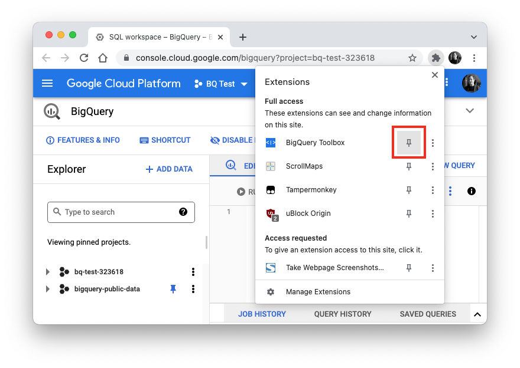
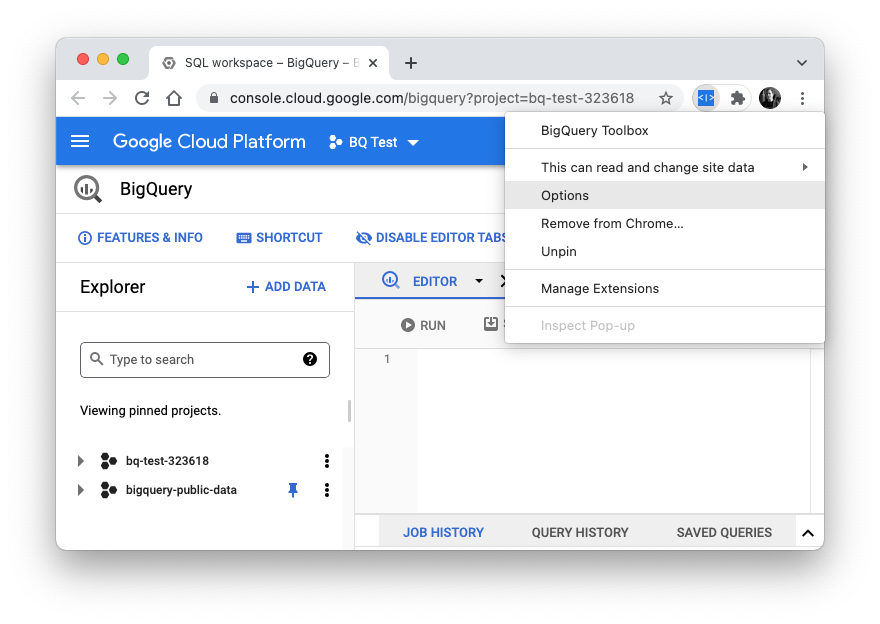

Welcome to BigQuery Toolbox!
Thank you very much for installing BigQuery Toolbox!
BigQuery Toolbox is a collection of simple BigQuery UI tools that I have developed to make my life as a BQ user easier and that I personally use on a daily basis
Here's a few hints for working with BigQuery Toolbox:
Pin to toolbar
First of all, to access BigQuery Toolbox quickly you should "pin" the BigQuery Toolbox icon to your extension toolbar in Chrome for easier access.
To do that, click the "Extensions" button in the top-right corner, next to your profile picture (the button that looks like a puzzle piece). From the dropdown list, find "BigQuery Toolbox" and click the pin so it turns blue.
Boom. Easy access guaranteed.
How to use
While in BigQuery, simply click the BigQuery Toolbox button to toggle the Explorer column.
Advanced Configuration
For more advances features, right-click the extension icon and click on "Options" or go here
Here you can do two things.
First, you can set what left-clicking the extension button does. By default it just toggles the Explorer column. If you tick "Hide Query Results", it will also hide the query results every time you click the icon.

Second, you can further improve the BigQuery UI by checking the following options:
- Hide Top Toolbar: This hides the rather useless top toolbar that says "Features & Info".
- Minimize the 'Create New Query' button: Removes the "Create new query" from the button and just leaves the large "[+]" icon
- Redesigned multi-row query tabs: Instead of having a side-scrolling query tab bar, enabling this feature shows tabs in multiple rows, while also reducing their size
About
Visit GitHub or arcq.de to learn more about BigQuery Toolbox.
If you like BigQuery Toolbox, buy me coffee. Much appreciated!